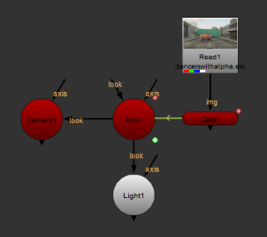

This section explains how to add a camera to your script, look through it, lock it, and edit its lens characteristics.
| 1. | Click 3D > Camera to insert a Camera node. |
OR
In the 3D Viewer, select create camera to place a new camera at the current position and orientation in 3D space.
| 2. | To setup the rendering camera, drag a connector from the new Camera node to the ScanlineRender node. |
OR
To setup an additional scene camera for viewing, drag a connector from the new Camera node to the Scene node.
| 1. | Press V to make sure you are looking through the 3D perspective view, and not one of the orthographic views. |
| 2. | From the 3D Viewer window, select the camera from the dropdown menu in the top right corner. |

NOTE: This selection does not change the camera used for rendering. This changes only the camera to “look through” for the current 3D Viewer.
Cameras in the current data stream automatically appear in the dropdown menu of cameras you can select. To select a camera that doesn’t appear in menu, double-click the Camera node to open its panel and add it to the menu.
You can lock the 3D view to the selected camera or light. You can toggle between the unlocked and locked modes by clicking the 3D view lock button, or by pressing Ctrl/Cmd+L.
• unlocked - move freely in the 3D view without restrictions. The 3D view lock button is gray.
• locked - lock your movement to the camera or light you’ve selected in the dropdown menu on the right side of the 3D view lock button. The 3D view lock button is red.
With the interactive 3D camera view mode you can change the camera or light values according to your movement in the Viewer. You can activate the interactive mode by Ctrl/Cmd+clicking the 3D view lock button. When the interactive mode is on, the 3D view lock button turns green. In order to activate the interactive mode, you need to have a Camera or a Light node selected in the dropdown on the right side of the 3D view lock button.
When the interactive mode is on, you can use the plus (+) and minus (-) keys to change the translate values of the camera or light you’ve selected. When the interactive mode is off, these keys zoom your view in and out.
| 1. | If necessary, double-click on the Camera node to display its parameters. |
| 2. | Click the Projection tab. |
| 3. | Drag the focal length slider to adjust the camera’s level of magnification. |
| 4. | Drag the near slide to edit the position of the camera’s forward clipping plane. Objects closer to the camera than this plane are not rendered. |
NOTE: The value for the near clipping plane must always be positive to produce a sensible result.
| 5. | Drag the far slider to edit the position of the camera’s rearward clipping plane. Objects farther from the camera than this plane are not rendered. |
| 6. | Increment the window translate u (horizontal axis) and v (vertical axis) sliders to translate the camera’s output along either axis. |
| 7. | Increment the window scale u (horizontal axis) and v (vertical axis) sliders to scale the camera’s output on either axis. |
| 8. | Drag the window roll slider to rotate the camera’s output on z. |
You can use the optional look input of the Camera node, so that the camera automatically rotates to face towards the connected input. You can attach a Camera, Light, or Axis node to the look input. For example, you can connect an Axis node to the look input so that the camera rotates to face the axis, wherever it is moved.
If you animate a card to move along the x axis, you can attach a Camera and a Light node with the look inputs so that they automatically rotate and face the card as it moves. To do this, complete the following steps:
| 1. | After animating your card, insert an Axis node. |
| 2. | Expression link the Axis node to the Card node by holding Ctrl, clicking on the translate animation button in the Card node's properties, and dragging it to the translate animation button in the Axis node's properties. The expression link is displayed as a green line with an arrow denoting the direction of the expression. See Linking Expressions for more information. |

| 3. | Insert a Camera node and either drag the camera to the required position in the Viewer, or use the Camera node properties to adjust the position of the camera. |
| 4. | Connect the Camera's look input to the Axis node. |

| 5. | Insert a Light node and drag the light to required position in the Viewer, or use the Light node properties to adjust the position of the camera. |
| 6. | Connect the Light node's look input to the Axis node |

| 7. | Playback your animated card and notice that the Camera and Light follow the animated card. |

|
|
|